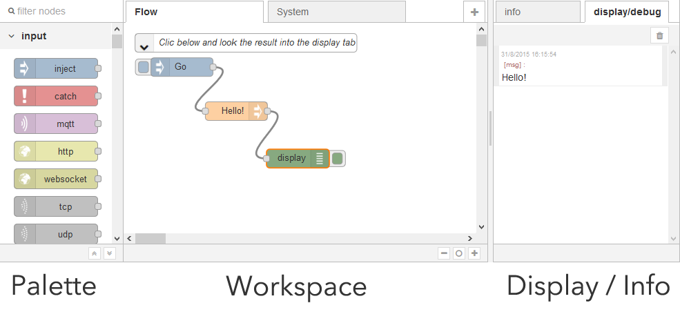

The visual editor
This tutorial introduces the visual editor: a graphical interface that allows to change the TimeSquAir’s behavior.
The visual editor is a web page that you access with your internet browser (use the dedicated tutorial First Launch to see more about that) to manage TimeSquair.
It allows to set preferences as well as its behavior.
The visual editor uses IBM’s Node-Red (http://node-red.org) an open source visual editor for using the internet of things.
It is a very dynamic project with an ever growing community.
Discovering Node-RED
The visual editor looks like this:

The Palette contains all available nodes (there is menu to import new ones from the community). Nodes can be wired together to build flows. To make a flow, nodes should be drag’n dropped from the palette to the workspace and them linked together.
In the flow above, clicking “Go” goes through “hello” and ends in the display node that prints “Hello” in the display tab.
How to build a flow
Building a flow is easy:
- Drag and drop nodes form the left palette
- Wire them together by dragging their handles
Activating
Once modified (by adding or removing nodes or wires) the flow should be activated by using the activate top right button.
Tigger the flow
The flow is triggered by a manual event (as the “Go button” above) or by external events (tweets, NFC tag, …). When triggered, the execution starts with the trigger node and goes right through the flow. If a Debug or Display node is invoked, a string is displayed in the info/debug tab.
As stated in the “Try and understand” tutorial, flows follow the scheme below:
Learn more about Node-RED
First read the IBM’s Node-Red website (http://node-red.org).
You can also go to Youtube to get great video tutorials.
How to find new nodes
There is a great Node-RED community that publish new nodes every day.
- Browse the IBM’s repository: http://flows.nodered.org
- Read (and contribute to) the forum https://groups.google.com/forum/#!forum/node-red
Use the “Import Node tutorial” to learn how to import nodes.